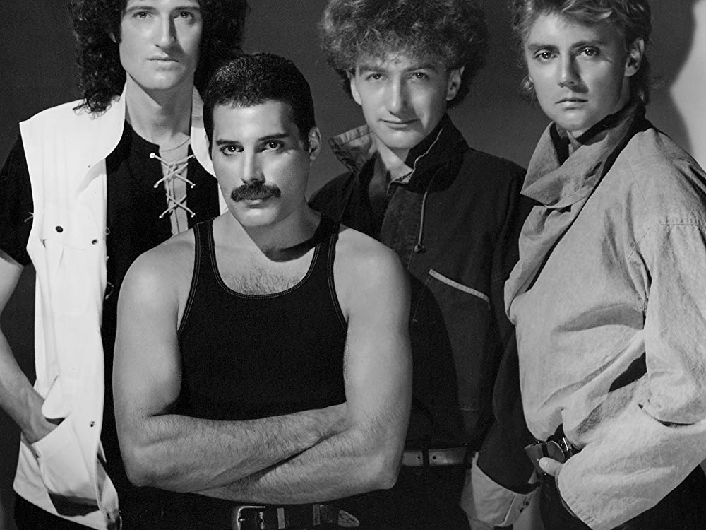

-

Queen
Οι Queen είναι βρετανικό συγκρότημα της ροκ, που δημιουργήθηκε στο Λονδίνο το 1971, με αρχικά μέλη τους Φρέντι Μέρκιουρι, Μπράιαν Μέι, Ρότζερ Τέιλορ και Τζον Ντίκον.Τα πρώτα τραγούδια των Queen ήταν εμπνευσμένα κυρίως από την glam rock,[3] το heavy metal και την progressive rock, με τον καιρό όμως το συγκρότημα πρόσθεσε στη μουσική του διάφορα και καινοτόμα στοιχεία, διερευνώντας την vaudeville, την ηλεκτρονική μουσική και την φανκ.
-
Φρέντι Μέρκιουρι
Φρέντι Μέρκιουρι, γεννημένος ως Φαρόκ Μπουλσάρα, ήταν Βρετανός τραγουδιστής και μουσικός. Θεωρείται ένας από τους μεγαλύτερους και πιο χαρισματικούς τραγουδιστές όλων των εποχών και είναι γνωστός για την φανταχτερή του περσόνα στη σκηνή και το τεσσάρων οκτάβων εύρος φωνής του.
-
Μπράιαν Μέι
Ο Μπράιαν Χάρολντ Μέι είναι Άγγλος μουσικός, συνιδριτικό μέλος του ροκ συγκροτήματος Queen και αστρονόμος. Θεωρείται ένας από τους καλύτερους κιθαρίστες όλων των εποχών. Έγραψε το τραγούδι We Will Rock You, το οποίο είναι ένα από τα δημοφιλέστερα τραγούδια των Queen.
-
Ρότζερ Τέιλορ
Ο Ρότζερ Τέιλορ είναι Άγγλος ντράμερ, μέλος του ροκ συγκροτήματος Queen.
-

Τζον Ντίκον
Ο Τζον Ντίκον είναι Άγγλος μπασίστας διάσημος ως μέλος του ροκ συγκροτήματος Queen, για το διάστημα 1971-1997. Οι Queen είχαν χρησιμοποιήσει έξι μπασίστες πριν από αυτόν και όπως έχει πει ο ίδιος, αυτό τον έκανε να νιώθει σαν το "καινούριο αγόρι".